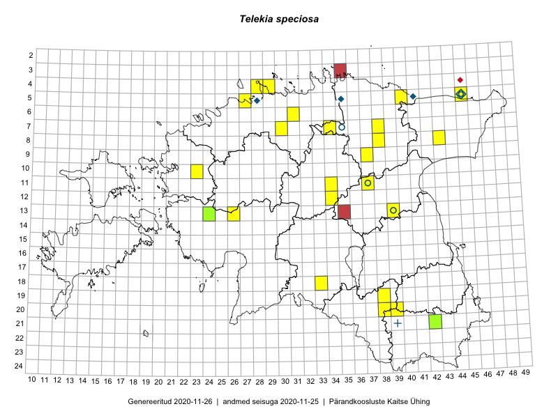

Telekia speciosa
Uuendatud: 2016-12-01
Kaardile koondatud taksonid: Telekia speciosa (Schreb.) Baumg.

Kaart põhineb 19 kirjel.
Viited andmebaasikirjetele
- Toomas Kukk, Thea Kull, Timo Luhamäe, Ott Luuk, Peedu Saar: 2015-06-28: 13-26: GPS punkt
- Tiit Hallikma, Toomas Kukk: 2015-07-21: 05-45: GPS punkt
- Toomas Kukk, Raivo Kalle: 2015-05-11: 09-37: GPS punkt
- Rein Kalamees, Kersti Püssa: 2015-09-13: 06-31: GPS punkt
- Ulvi Selgis: 2015-10-10: 11-37: ala
- Ulvi Selgis: 2015-08-27: 13-39: GPS punkt
- Liina Oja, Rein Kalamees: 2016-07-04: 07-30: GPS punkt
- Liina Oja, Eerik Leibak: 2016-07-28: 07-38: ala
- Liina Oja, Eerik Leibak: 2016-07-28: 07-38: GPS punkt
- Liina Oja, Eerik Leibak: 2016-07-28: 07-38: GPS punkt
- Sander Laherand, Peedu Saar: 2016-07-28: 05-40: GPS punkt
- Timo Luhamäe, Peedu Saar: 2016-07-21: 11-34: GPS punkt
- Timo Luhamäe, Meeli Mesipuu: 2016-07-22: 12-34: GPS punkt
- Ulvi Selgis: 2016-08-27: 13-39: ala
- Sander Laherand, Tõnu Ploompuu, Nele Jõessar: 2016-07-25: 04-29: ala
- Sander Laherand, Tõnu Ploompuu, Nele Jõessar: 2016-07-25: 04-28: GPS punkt
- Sander Laherand, Tõnu Ploompuu, Nele Jõessar: 2016-07-25: 04-29: GPS punkt
- Sander Laherand: 2016-09-13: 19-38: GPS punkt
- Meeli Mesipuu, Timo Luhamäe: 2016-07-22: 12-34: ala